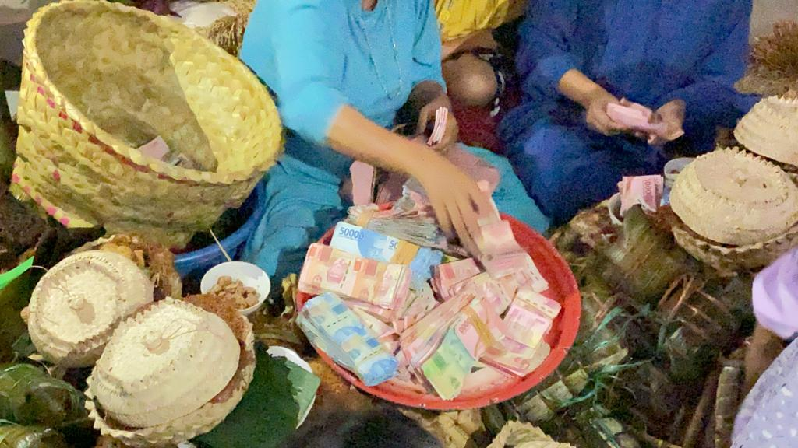
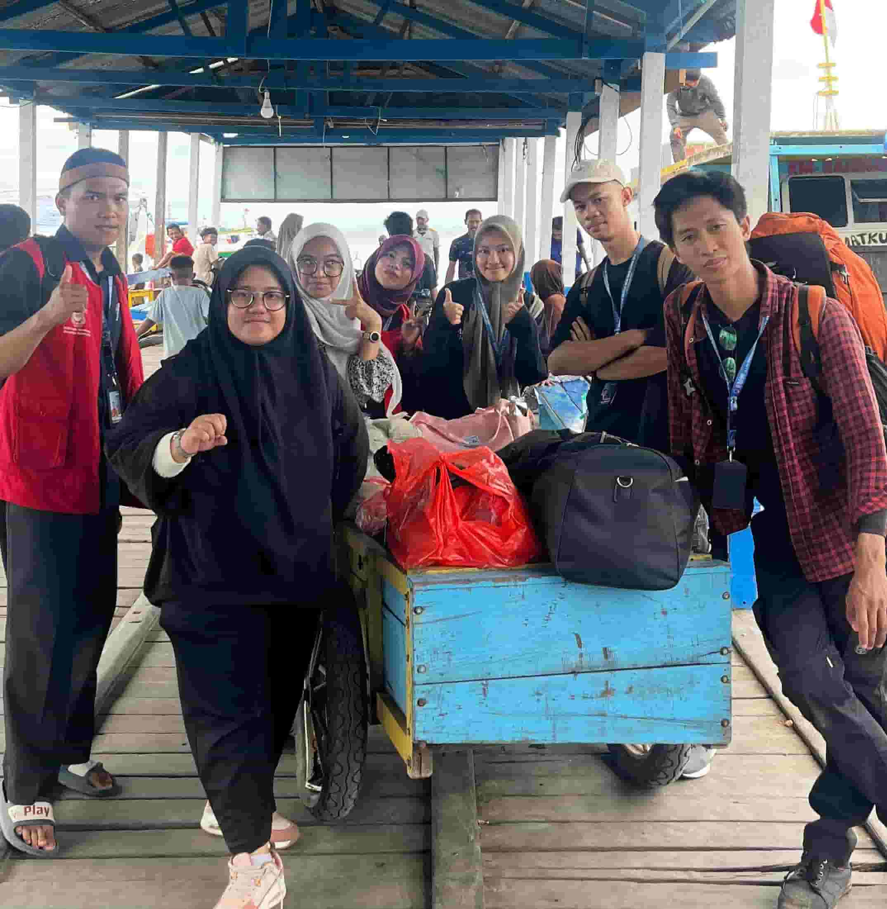

Pengalaman & Proyek Riset

Pendanaan PKM-RSH Kemendikbudristek
Kab. Bone, 2024
Meraih hibah penelitian untuk menganalisis dinamika politik lokal. Riset ini berfokus pada strategi kaum bangsawan di Kabupaten Bone dalam mengonversi modal kultural dan historis mereka menjadi kekuatan politik kontemporer.

Pendanaan PKM-RSH Kemendikbudristek
Suku Kajang, 2023
Mendapatkan pendanaan riset untuk meneliti tradisi "Passolo" di komunitas adat Ammatoa Kajang. Riset ini mengkaji pergeseran nilai solidaritas sosial dan ekonomi dalam ritual adat di tengah arus modernisasi.

Research Assistant - Studi Depresi
Makassar, 2025
Terlibat langsung dalam pengumpulan dan analisis data lapangan mengenai prevalensi depresi di kalangan masyarakat urban. Pengalaman ini mengasah empati dan ketajaman analisis sosiologis terhadap isu kesehatan mental.

Borneo Shark & Rays Research
Kalimantan, 2024
Membantu observasi ekologi kelautan dengan pendekatan interdisipliner. Proyek ini melihat secara langsung hubungan antara kehidupan sosial ekonomi masyarakat nelayan pesisir dengan urgensi konservasi hiu dan pari.

Contributing Writer & Web Dev
Berbagai Media Publikasi
Menulis artikel opini yang diterbitkan di Kumparan dan Harian Fajar. Selain itu, saya mengembangkan website statis untuk profil Desa Tanete guna membantu proses digitalisasi informasi di tingkat pemerintahan desa.